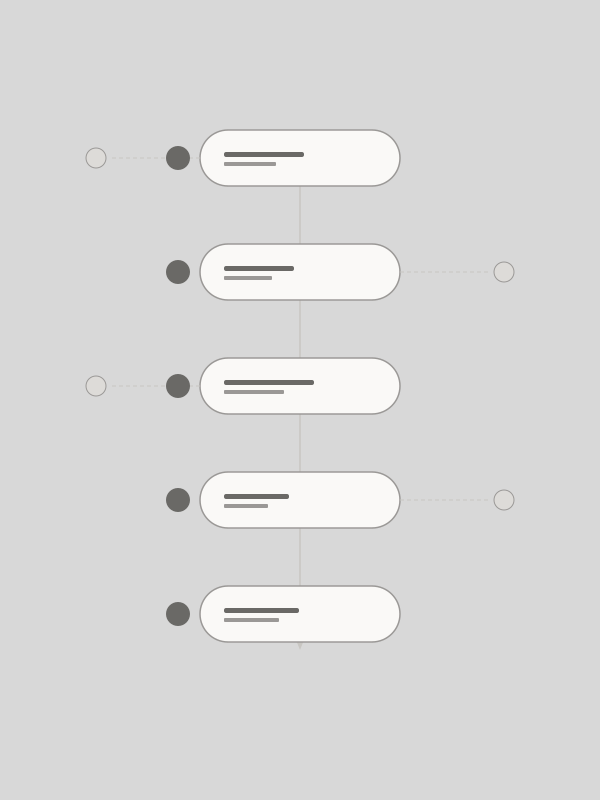
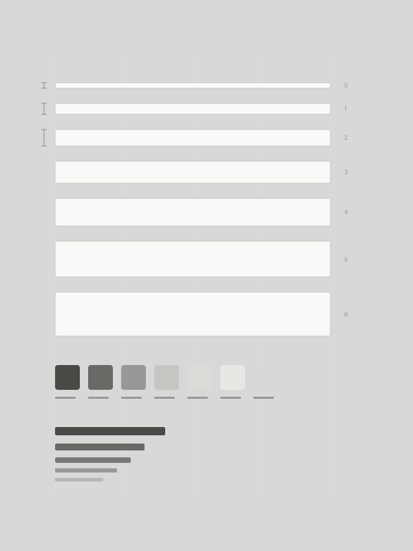
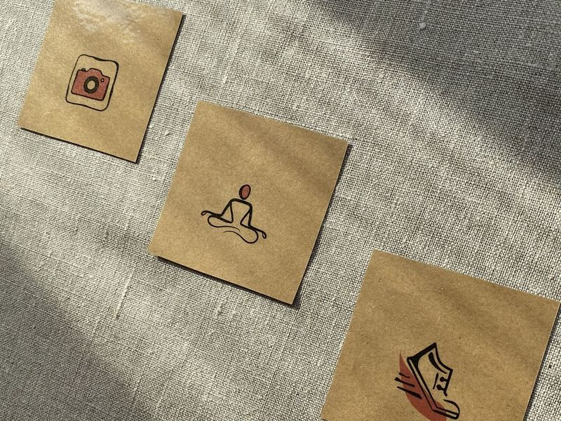
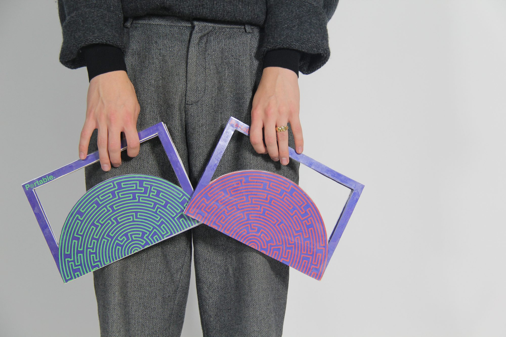
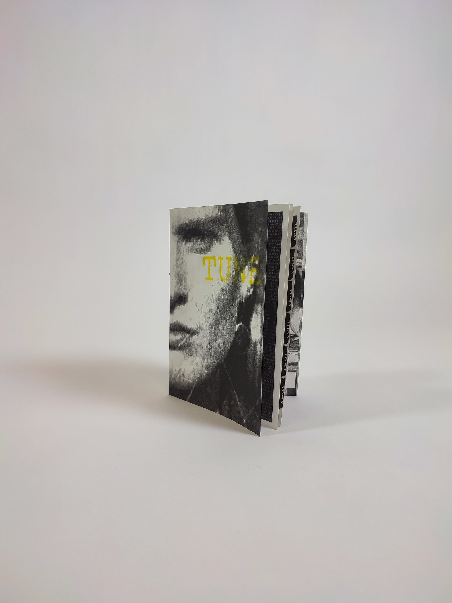
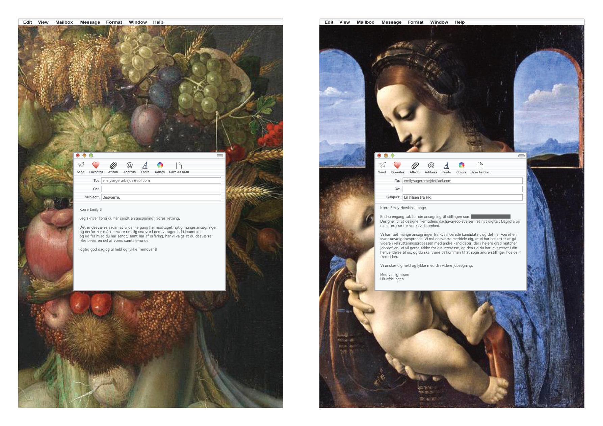

Designing how a design system collaborates
Design systems
01

Systematising product language
Content design
02

Building foundational stability
Foundations & tokens
03

Designing for low self-esteem
UX research
04

Portable.
Product design
05

Typographic kitchen
Exhibition
06

Tune
Graphic design
07

Flow
Creative book
08

Work
Product Designer, Design Systems
2022 – Present
Visma e-conomic
Owning and evolving the design system — component architecture, documentation, governance, and cross-team alignment. Driving consistency and quality across product teams.
UX Project Lead
2022
Design Matters
Led design, testing, and QA for Design Matters Plus. Curated content and shaped the end-to-end user experience of the platform.
Freelance Web Designer
2019 – 2021
Designed and built websites in WordPress — from client briefing and scoping through to design and implementation.
Graphic Designer
2020 – 2021
ClickLearn
Created visual assets for conferences, webinars, video, and social media channels.
Student Consultant
2019
Digital Sprint
Month-long design sprint for the Danish Veterinary and Food Administration (Fødevarestyrelsen), delivering rapid digital solutions.
Concept Developer
2017
Copenhagen Creators
Design research, concept development, and low-fidelity prototyping for an app and game studio.
Education
MSc in Digital Design & Interactive Technologies
IT University of Copenhagen
2019 – 2021
BSc in Digital Media & Design
IT University of Copenhagen
2016 – 2019
Economics & Business Administration (Electives)
Copenhagen Business School (CBS)
Autumn 2018
Computational Media (Exchange)
Georgia Institute of Technology (GA, USA)
Spring 2018
Certificates
Subatomic: The Complete Guide to Design Tokens
Spring 2026
Brad Frost
Graphic Design
Autumn 2021
Krabbesholm Højskole
Six-month programme focused on core visual design principles — typography, layout, colour — and tackling complex design challenges across disciplines.
JavaScript Bootcamp
Summer 2019
Barcelona Code School
Intensive two-week course covering JavaScript fundamentals and hands-on application building.
Skills
Tools
Volunteering